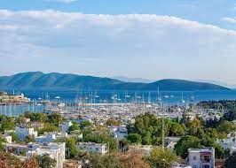
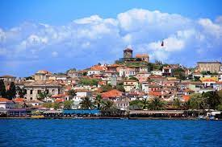
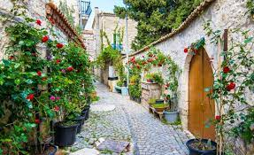

Türkiye’de Popüler Tatil Yerleri
Bodrum, Muğla

Tatil yerleri listemizin birinci sırasında elbette Bodrum var. Tatil yapılacak yerlerin en çok tanınanı, en çok bahsedileni de belki de Bodrum. Türkiye’de deniz, kum, güneş sözcüklerini bir araya getirdiğimiz zaman zihnimize düşen ilk yer çoğumuz için Bodrum oluyor.
Dört mevsim hareketli bir ilçe olan Bodrum’u esasen sadece yaz mevsimiyle ilişkilendirmek elbette biraz haksızlık olur. Buna rağmen yaz mevsiminde bölgedeki nüfusun ortalama 10 katına çıkması da yadsınamaz bir gerçek.
Eski adı Halikarnassos olan Bodrum’da, sadece güneşi, pırıl pırıl denizi ya da geniş kumsalları değil, binlerce yıllık tarihin ayak izlerini ve mitolojinin gizemini bulacaksınız. Bir dönem “Yılın En İyi Müzesi” unvanını almaya hak kazanmış olan Bodrum Kalesi ilçenin tam kalbinde yer alıyor.
Bodrum’da Ne Yapılır?
700 metre sahil uzunluğu ve 20 metre sahil genişliği olan Bitez Plajı’na gidin ve çarşaf gibi denizin ve güneşin keyfini çıkarın.
Dünyanın 7 harikasından birinin Bodrum’da olduğunu söylesek… Milattan Önce 377’de ölen Kral Maussollos adına yaptırılan Halikarnas Mozolesi’ni yerinde görme fırsatını kaçırmayın.
Zeki Müren’in Bodrumlu olduğunu muhakkak duymuşsunuzdur. O halde Bodrum’a kadar gelmişken Zeki Müren Sanat Müzesi’ni ziyaret etmeden dönmeyin.
Her daim bir etkinlik, söyleşi, sergi ya da gösterim bulabileceğiniz Dibeklihan Kültür Sanat Köyü’nü keşfedin.
Bodrum’u içeriden fethetmek istiyorsanız günübirlik tekne turlarına katılın. Denizden bütün Bodrum’u kucakladığınızı hissedeceksiniz.
Ayvalık, Balıkesir

Tatil yapılacak yerlerin en güzellerinden birisi olan Ayvalık, Balıkesir’in Ege’ye doğru firar etmiş ilçesi. Buranın zaten bütün kalbiyle, ruhuyla, neşesiyle Ege’ye ait olduğunu gelir gelmez fark edeceksiniz. Hayatınız boyunca Ayvalık’ı sadece tostuyla değil, Cunda Adası’yla, Şeytan Sofrası’yla ya da Sarımsaklı Plajı ile anımsamak için rotanızı bir an önce bu şirin beldeye çevirin.
Ayvalık’ta Ne Yapılır?
Huzurlu bir atmosferde denizin tadını çıkarmak mı istiyorsunuz? Doğrudan Sarımsaklı Plajı’na…
“Yaz tatili rakı balıksız olmaz” dediğinizi duyar gibiyiz. O halde doğru adrestesiniz. Çünkü “Rakı, Balık, Ayvalık” buralarda hep aynı cümle içinde yer alır.
Cunda’ya tatilinizde çok geniş bir yer açın. Zira burası alışverişin, gece hayatının ve tarihin merkezi. İster gece stantlarından, isterseniz de gündüz çarşısından sevdikleriniz için orijinal hediyeler arayın.
Cunda’nın meşhur evlerini ve taş sokaklarını dolaşırken bol bol fotoğraf çekin.
Tarihi zeytinyağı ve sabun fabrikasını ziyaret edin.
Alaçatı, İzmir

Tatil beldeleri arasında “En İyi Çıkış Yapan Yerler” şeklinde bir liste yapsak, şüphesiz ki zirvede Çeşme‘den başka bir yeri göremeyiz.
Çeşme’nin bu önlenemez yükselişinde Alaçatı’nın payı ise tartışılmaz. Eskiden sadece rüzgar sörfüyle ön planda olan Alaçatı, şimdilerde yaz tatillerinin vazgeçilmez adresi durumunda.
İzmir’e yaklaşık 90 km olan Alaçatı, sizi yol boyunca buranın simgesi olan rüzgar değirmenleriyle karşılar.
Butik otelleri, son derece şık mekanları, sörf tutkunlarının vazgeçemediği hırçın denizi ve otantik çarşısıyla Alaçatı’da renkli bir yaz tatili sizleri bekliyor.
Alaçatı’da Ne Yapılır?
Alaçatı’ya kadar gelmişken buranın simgesi olan yel değirmenlerini es geçmeyin. 150 senelik bir tarihi olan yel değirmenleri, turistler tarafından büyük ilgi görüyor.
Her tatil beldesinin küçük ya da büyük bir çarşısı var; ancak Alaçatı’nın çarşısı beklentilerin çok üzerinde. Alışveriş için gözünüz başka bir yeri aramasın, Alaçatı çarşısında aradığınız her şeyi bir arada bulacağınıza emin olabilirsiniz.
Renkli taş evleri evinize döndüğünüzde hatırlamak istiyorsanız burada bol bol fotoğraf çekin.
Eğer denk gelirseniz buradaki sörf müsabakalarını yerinde izleyin.